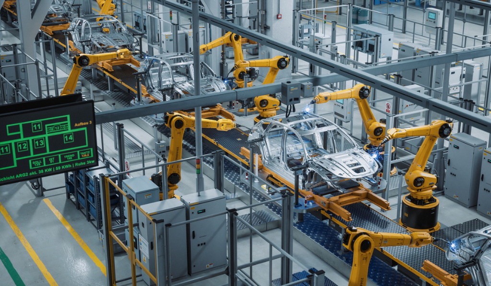
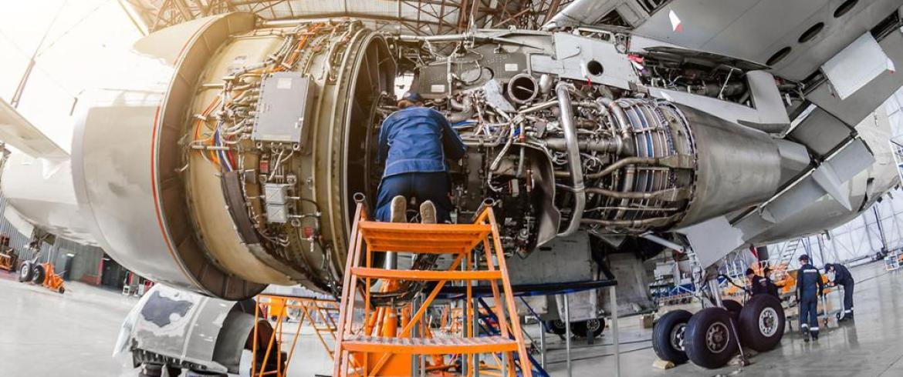
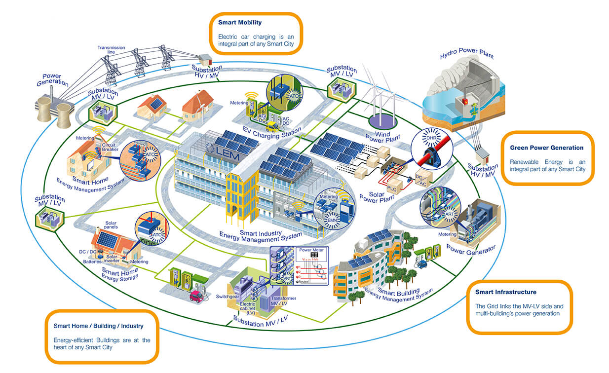

Syllabus
Outline applications of mechatronic systems in a variety of specialised fields
Learning Intention and Success Criteria
Learning Intention - Students will:
- develop an understanding of the diverse applications of mechatronic systems in various specialised fields
Success Criteria - Students can:
- demonstrate knowledge of various applications of mechatronic systems
- assess the role of mechatronics in modern technology
Content
Manufacturing and Industrial Automation
Mechatronic systems significantly enhance manufacturing processes by integrating automation, which increases precision, efficiency, and flexibility.
- Robotic Arms: Used for tasks such as welding, painting, assembly, pick and place, and packaging. They offer high precision and can work continuously without fatigue.
- Automated Guided Vehicles (AGVs): These are used to transport materials within a factory autonomously, reducing the need for human labour and increasing operational efficiency.
- Computer Numerical Control (CNC) Machines: These automated machining tools are controlled by a computer, allowing for the precise and complex manufacturing of parts, which is essential for maintaining high-quality production standards.

Automation in Vehicle Production
Mechatronic Industries
Automotive
In the automotive sector, mechatronic systems enhance vehicle safety, performance, and automation, leading to more reliable and intelligent vehicles.
- Anti-lock Braking Systems (ABS): Prevents wheels from locking up during braking, which helps maintain vehicle control and reduces stopping distances, especially on slippery surfaces.
- Electronic Stability Control (ESC): Enhances vehicle stability by detecting and reducing loss of traction, preventing skidding and rollovers.
- Advanced Driver-Assistance Systems (ADAS): Features like adaptive cruise control, lane departure warnings, and automatic emergency braking improve driver safety and convenience by assisting with driving tasks and alerting drivers to potential hazards.
Aerospace
Mechatronic systems in aerospace contribute to enhanced control, stability, and operational efficiency of aircraft and spacecraft.
- Unmanned Aerial Vehicles (UAVs): Also known as drones, these are used for surveillance, mapping, and delivery, providing valuable data and services with precision and flexibility.
- Fly-by-Wire Systems: Replace traditional manual flight controls with electronic interfaces, improving aircraft performance and safety by allowing for more precise control and reducing pilot workload.
- Satellite Attitude Control: Systems that maintain the orientation of satellites, ensuring they remain properly aligned for communication and observation tasks.

Aerospace Engineering
Medical Field
Mechatronic systems revolutionise medical technology, enhancing diagnostic, therapeutic, and surgical capabilities.
- Surgical Robots: Provide surgeons with enhanced precision and control during minimally invasive procedures, leading to better patient outcomes and faster recovery times.
- Prosthetics: Advanced prosthetic limbs with integrated sensors and actuators allow for more natural movement and improved functionality for amputees.
- Diagnostic Devices: Automated systems such as blood analysers and MRI machines offer quick, accurate diagnostics, which are essential for effective treatment planning.
Consumer Electronics
In consumer electronics, mechatronic systems improve functionality, user experience, and connectivity.
- Smartphones: Integrate sensors, cameras, and actuators to offer a wide range of functionalities, from high-quality photography to health monitoring.
- Home Automation Systems: Devices like smart thermostats, lighting, and security systems enhance home comfort, energy efficiency, and security through automation and remote control.
- Wearable Technology: Fitness trackers and smartwatches monitor health parameters, providing users with valuable data to manage their health and fitness.
Home Automation System Graphic
Agriculture
Mechatronic systems in agriculture increase efficiency, precision, and sustainability in farming practices.
- Autonomous Tractors: Perform tasks such as ploughing, seeding, and harvesting with minimal human intervention, increasing productivity and reducing labour costs.
- Precision Farming Equipment: Utilises GPS and sensors to optimise field management, leading to better crop yields and reduced resource usage.
- Drones: Used for crop monitoring, spraying pesticides, and surveying large areas, providing detailed insights that help farmers make informed decisions.
Energy Sector
Mechatronic systems help manage and optimise energy production, distribution, and consumption.
- Smart Grids: Integrate digital technology to manage electricity supply efficiently, improving reliability and facilitating the integration of renewable energy sources.
- Renewable Energy Systems: Automated systems manage wind turbines and solar panels, maximising energy production and efficiency.
- Robotic Inspection Systems: Inspect and maintain power lines and pipelines, ensuring safety and reducing downtime through early detection of issues.

Smart Grid Technology
Defence and Military
In defence and military applications, mechatronic systems enhance operational capabilities, safety, and effectiveness.
- Unmanned Ground Vehicles (UGVs): Used for tasks like bomb disposal and reconnaissance missions, reducing the risk to human personnel.
- Exoskeletons: Enhance soldier capabilities by providing additional strength and endurance, improving mobility and reducing fatigue.
- Autonomous Combat Systems: Include drones and robotic systems that can operate in combat scenarios, providing surveillance, targeting, and offensive capabilities without putting human lives at risk.
Sources
- Automation in Production: https://www.txone.com/blog/potential-threats-to-automated-factories/
- University of Sydney (2024). Aeronautical Engineering
- Security.org (2024). Home Automation
- LEM (2024). Smart Grid
PowerPoint